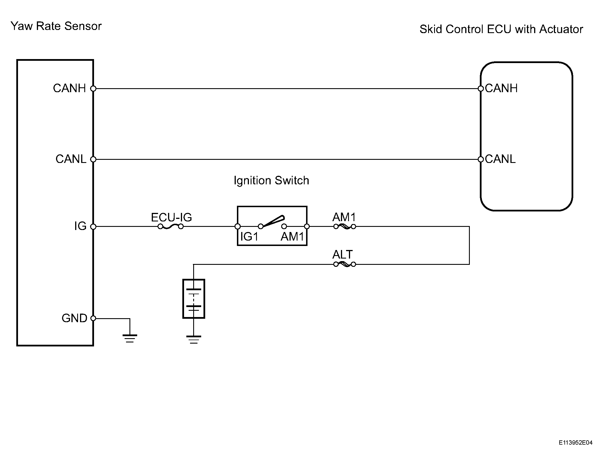

DTC C1232/32 Stuck in Deceleration Sensor; DTC C1234/34 Yaw Rate Sensor Malfunction; DTC C1243/43 Acceleration Sensor Stuck Malfunction; DTC C1244/44 Open or Short in Deceleration Sensor Circuit; DTC C1245/45 Acceleration Sensor Output Malfunction; DTC C1279/79 Acceleration Sensor Output Voltage Malfunction (Test Mode DTC); DTC C1381/97 Yaw Rate and / or Acceleration Sensor Power Supply Voltage Malfunction: Wiring Diagram

Courtesy of © TOYOTA, LICENSE AGREEMENT TMS1002